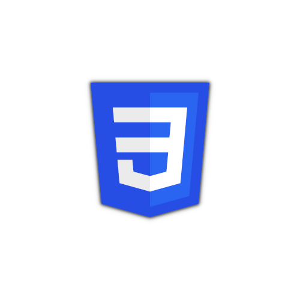

Bienvenue.


À PROPOS DE MOI
Résidant à Montpellier (34), j'ai 20 ans et je suis un passionné d'informatique.
J'ai
obtenu le titre de Développeur Web et Web Mobile. De la conception au
développement
en passant par le SEO, tout m'intéresse dans ce métier.
J'aime le maquettage, la conception
de
diagrammes, mais j'ai une préférence particulière pour le Front-End. J'aimerais
développer
mes compétences en design et graphisme.
Concernant mes technologies favorites pour le
web,
j'utilise principalement CSS, JavaScript ou encore le CMS Wordpress. Pourtant, cela ne m'empêche
pas d'avoir de bonnes notions en Back-End.
Actuellement à la recherche d'un emploi WordPress, je vous laisse découvrir mon parcours, mes
réalisations et mes compétences !